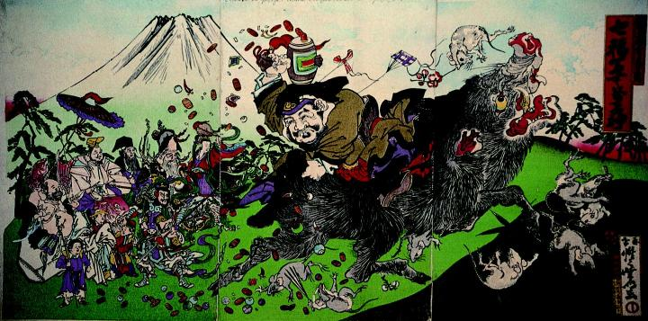

富士山麓で、大黒天が巨大な猪に跨って打出の小槌をふるっている。小槌からは小判や宝珠などが出ており、これをネズミたちが拾い集めている。遠くからは七福神たちが見物している。
著作者：河鍋暁斎／出典：親書誌：A5_pushkin_0037：七福富士萬喜神；シチフクフジノマキガミ／日付：2011／資源識別子：A5_pushkin_0037_0001_0000
Copyright (c)2010- International Research Center for Japanese Studies, Kyoto, Japan. All rights reserved.